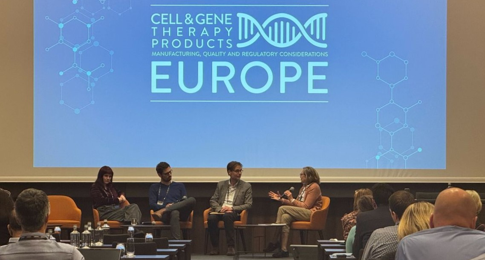
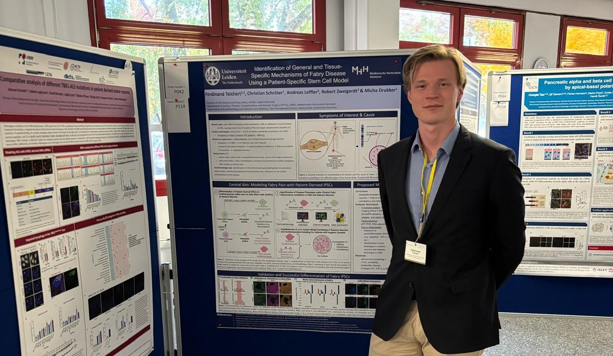
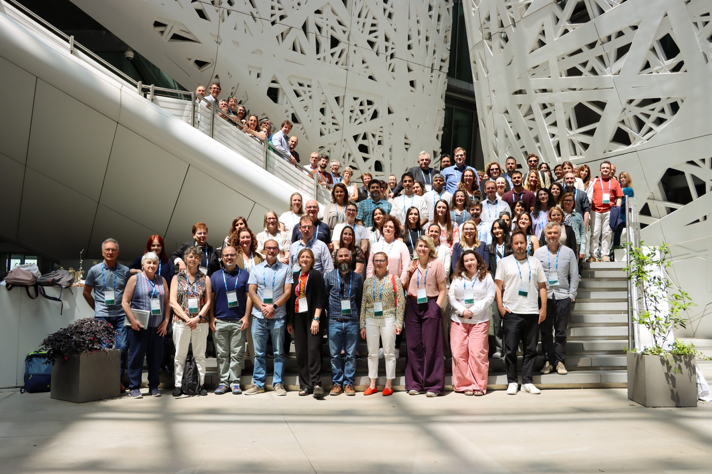
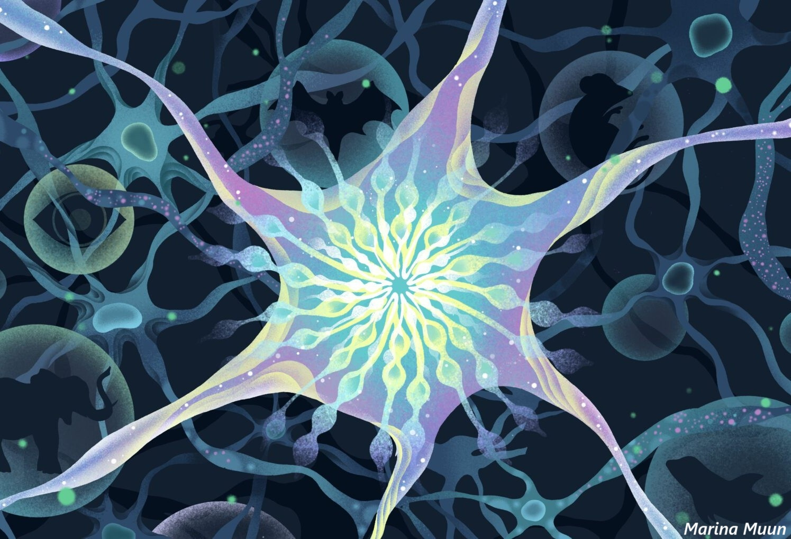
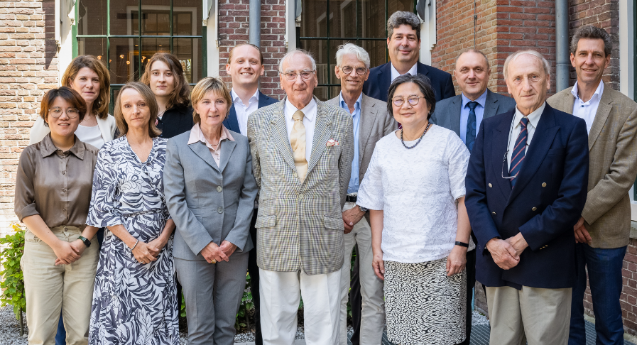

Welcome to Our Research Group
The Drukker lab, led by Prof. Dr. Micha Drukker, is dedicated to advancing stem cell biology, regenerative medicine, and disease modeling. We explore the fundamental mechanisms that govern embryonic tissue formation, leveraging induced pluripotent stem cells (iPSCs) to create innovative models for human disease and drug development, with a focus on neurodegeneration.
Our research integrates transcriptional and epigenetic regulation, lncRNAs, membraneless organelles, and self-renewal mechanisms, using state-of-the-art techniques such as organoid technology, single-cell RNA sequencing, flow cytometry, and CRISPR-Cas9 genetic engineering.
We partner with scientists across disciplines within Leiden University and the Leiden University Medical Center (LUMC) to develop stem cell-based organoid models for drug discovery, toxicity testing, and alternatives to animal models. Additionally, we contribute to stem cell immunology and GMP manufacturing of iPSCs for clinical applications. Our lab also supports evolutionary developmental biology and de-extinction efforts by banking stem cells from exotic and endangered species.
Through a combination of basic and applied research, we aim to shape the future of living cell therapeutics—a new class of treatments that harness stem cells and immune cells to revolutionize medicine.

Updates

Cell and Gene Therapy Products Europe 2025
October 23-24, 2025. Basel
PhD Candidate Rafaella Buzatu attended the first edition of CGTP Meeting held in Europe and presented her work on "Evaluating sequencing strategies for ATMP genomic risk assessment".

German Stem Cell Network Conference 2025
October 15-17, 2025. Helmholtz Munich
Guest PhD Candidate Ferdinand Teichert, M.D. and Dr. Christian Schröter attended the GSCN Conference, where Christian gave a talk entitled "Single-cell multiome uncovers differences in glycogen metabolism underlying species-specific speed of development" and Ferdinand presented a poster on "Identification of General and Tissue-Specific Mechanisms of Fabry Disease Using a Patient-Specific Stem Cell Model".

CorEuStem 2025 Symposium
May 29-30, 2025. Human Technopole, Milan
PhD Candidate Rafaella Buzatu gave a talk on "Genotoxicity assessment of iPSCs using RNA-sequencing".

Paraspeckle and Condensates Symposium
October 30, 2024. Rottnest Island
Dr. Ksenia Arkhipova and Prof. Dr. Micha Drukker attended the Paraspeckle and Condensates Symposium, where Micha gave a talk and Ksenia presented a poster on "Phylogenetic Study of Long Non-Coding RNA NEAT1 and MALAT1 to Infer Structural-Functional Connection".

Pre-print by K.Arkhipova available on BioRxiv: Phylogenetic Study of Long Non-Coding RNA NEAT1 and MALAT1 to Infer Structural-Functional Connection
October 25, 2024
Available at doi: https://doi.org/10.1101/2024.10.22.619594
Pre-print by A. de la Porte available on BioRxiv: Single-cell multiome uncovers differences in glycogen metabolism underlying species-specific speed of development
September 6, 2024
Available at doi: https://doi.org/10.1101/2024.09.03.610938
Drukker Lab at the ISSCR 2024 in Hamburg
10-13 July, 2024

Article on our JTF-funded longevity project authored by science journalist Bethany Brookshire (illustration by Marina Muun)
May 6th, 2024
Read the full feature at: https://www.templeton.org/news/how-a-petri-dish-zoo-could-help-scientists-understand-longevity
Pre-print by D. Kelle available on BioRxiv: Capture of Human Neuromesodermal and Posterior Neural Tube Axial Stem Cells.
March 29, 2024
Available at doi: https://doi.org/10.1101/2024.03.26.586760

Committed stem-cell-research donor sets up third named funds
July 6, 2023
Behind each named fund is a special story, but it is not often that, having already set up two very personal funds, a donor chooses to make a third contribution to Leiden’s research. In the Faculty Club Dining Room, donor and alumnus Hans van der Valk signed the agreement establishing the ‘Lingling Wiyadharma Fund for the Practice of the Natural Sciences’. Full text here.